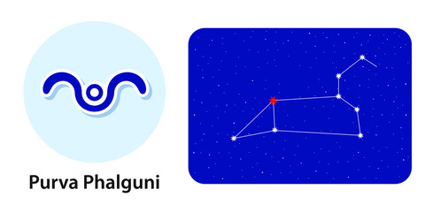

Nakshatra Pubba
Pubba Nakshatra
Characteristics male
Males born in Purva Phalguni Nakshatra tend to have a very prosperous career in whichever field they choose to take. They will have a successful life in terms of their profession but there are also chances where they will have to face some kind of mental disturbance because of various issues. They love their independence and freedom, and will not take lightly on those who try to take their freedom away from them. Males of this nakshatra are very soft-spoken and they possess the power of intuition which they will use for the benefit of others. They also love to travel.Profession male
Purva Phalguni males do not like to work under someone else, so jobs, where they have to answer to their superiors, will not be the best choice of profession for them. Because of this nature, their hard work will mostly be unappreciated by their superiors and they will be unliked by them, which will ultimately result in them not getting promotions and a delay in their success. They are more prone to having enemies which they are not aware of, causing them difficulties in their career, even when these males are very honest human beings and will never try to gain success by sacrificing someone else. Males of this nakshatra are very intelligent, hence even if someone tries to cheat or plot against them, they will easily overcome it. They are more likely to venture into different jobs until the age of 45 and after that, they will be fairly satisfied with their place. Chances are that people will try to cheat them financially, so they should avoid lending money to others.Compatibility male
In terms of married life, male born in this nakshatra will be fairly lucky to have loving children and a loving wife. His wife will be a good housewife and h will have a very good connection with her leading a healthy and happy life. Unfortunately, there might be instances where he might not end up with the person he loves but that doesn’t mean he will have an unhappy marriage. They are more likely to live away from their birthplace and their family.Health male
Apart from very small illnesses such as dental issues, stomach problems, or in rare cases diabetes, they will lead a healthy life and will rarely have to worry about their health.Characteristics female
Purva Phalguni Nakshatra females are those who are proficient in everything they do. They are polite and honest, highly amiable, and knowledgeable in the field of arts. Their chaste nature makes them want to perform services for the good of society and also do charity work. Because of their honesty, they will hardly perform any illegal activity or do something that might harm someone in any way. All these features make them a very likeable person. But something that they should think of changing is their desire to gloat about their success around people who lack. This is the only thing that might be holding them back from gaining social success.Profession female
As mentioned previously, females of this nakshatra are highly intelligent and they will want to put that to use by making a career in the field of science. Their curious nature will make them want to indulge in scientific research and they might choose to be a teacher as their career. There will rarely be a time when she will be unsatisfied with her success as she is surely going to be financially successful.Compatibility female
Females born in Purva Phalguni Nakshatra tend to have a loving and caring family with happy and healthy children and a doting husband. Family is the most important thing for these females, as they are ready to sacrifice anything for the sake of their family. Also, they are not one of those who forget a good deed done to her and will make sure to pay back the generosity that she received.Health female
Females of this nakshatra will live a healthy life with no serious health problems. Though they might have to face some minor problems including menstrual problems or breathing issues or asthma, but non too serious to cause concern or disrupt their lifestyle.Pubba Nakshatra Padas
1. Pada 1st: The first pada of this nakshatra lies in the Leo navamsa and is mainly dominated by the Sun. The people born in this pada can expect them to be highly intelligent and use their knowledge to educate others. The domination by the Sun represents the focus on the self.
2. Pada 2nd: The second pada of this nakshatra is dominated by Mercury and lies in Virgo navamsa. Those belonging to this pada are very hardworking and in return are fairly successful.
3. Pada 3rd: The third pada of this nakshatra falls in the Libra navamsa and is dominated by Venus. The influence of the venus brings out the creative nature. Natives of this category have a calm and relaxed personality.
4. Pada 4th: The fourth pada of this nakshatra is dominated by Mars and lies in Scorpio navamsa. The main concern for this category is emotional values, family importance, introspection, and courage.